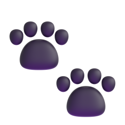

فهرست داروها:
۲۴۵ دارو
💡 برای مشاهده سریع دوزها و حجم سرنگ هر دارو، روی کادر آن کلیک کنید.
دارویی با این مشخصات یافت نشد
املا یا فیلترهای انتخابی را تغییر دهید.

دارونامه جامع و سامانه تصمیمیار بالینی دامپزشکی ایران
وزن بیمار را تغییر دهید تا حجم آماده کشیدن در سرنگ (mL) روی تمام داروها فوراً محاسبه شود.
املا یا فیلترهای انتخابی را تغییر دهید.
رده دارویی
تعیین گونه، شکل دارویی (شربت، تزریقی، قرص، قطره، پودر) و پروتکلهای تخصصی
۱. آنتیکلاژناز: قطره سرم اتولوگ (خون سانتریفوژشده بیمار) هر ۱ تا ۲ ساعت جهت مهار متالوپروتئینازها.
۲. آنتیبیوتیک باکتریسید غنیشده: سفازولین غنیشده (50 mg/mL) + توبرامایسین غنیشده (14 mg/mL) متناوب هر ۲ ساعت.
۳. سیکلوپلژیک: قطره آتروپین ۱٪ هر ۱۲ ساعت جهت تسکین اسپاسم مژگانی تا اتساع مردمک.
کاهش ۲۵٪ دوز یا افزایش فواصل مصرف داروهای دفع کلیوی؛ پرهیز کامل از مصرف داروهای ضدالتهاب غیراستروئیدی (NSAIDs).
• آمپیسیلین / سفازولین: در مرحله ۳ و ۴ فواصل مصرف از q8h به q12h افزایش یابد.
• انروفلوکساسین: در استیج ۳ و ۴ دوز ۲۵ تا ۵۰ درصد کاهش یابد.
• آمیکاسین و جنتامایسین: در استیج ۲ به بالا به دلیل سمیت حاد توبولار ممنوعیت مصرف دارند.
1.0 L/min
لیتر در دقیقه100 - 150 mL
10 تا 15 mL/kg< 20 cmH2O
پیشگیری از باروتروماسگ: 1.30٪ | گربه: 1.63٪ | اسب: 1.31٪
سگ: 2.36٪ | گربه: 2.58٪ | اسب: 2.31٪
کارفنتانیل ۱۰,۰۰۰ بار و اتورفین ۱,۰۰۰ تا ۳,۰۰۰ بار قویتر از مرفین هستند. جذب پوستی، مخاطی یا سوزنزدگی تصادفی پرتابه دارت ظرف چند ثانیه باعث دپرسیون شدید تنفسی و ایست قلبی انسان میشود.
۱. همراه داشتن دائمی حداقل ۲ الی ۴ آمپول نالوکسان انسانی در جیب لباس تکنسین.
۲. تزریق فوری 0.4 تا 0.8 میلیگرم نالوکسان IV یا IM به فرد مصدوم بدون اتلاف وقت.
۳. تکرار تزریق نالوکسان هر ۲ تا ۳ دقیقه تا احیای تنفس ارادی و گشادی مردمک.
۴. شستشوی فوری موضع نشت با مقادیر فراوان آب تمیز بدون الکل (الکل جذب اوپیوئید را تسریع میکند).
بررسی بیدرنگ تداخلات چنددارویی بر اساس فارماکوپه رسمی دامپزشکی ایران، مراجع بینالمللی و استاندارد تصمیمیار بالینی
نام داروی مورد نظر خود را در کادر بالا بنویسید یا روی یکی از دکمههای پرمراجعه کلیک فرمایید تا تمامی تداخلات ماژور، متوسط و همافزاییهای آن به صورت تفکیکشده ظاهر شوند.
بر اساس راهنمای بینالمللی احیای قلبی ریوی RECOVER 2024 و فارماکوپه بالینی دامپزشکی
| داروی احیا | دوز استاندارد بالینی | غلظت ویال | حجم سرنگ (سیسی) | مسیر و نوبت مصرف |
|---|
| پادزهر | داروی هدف | غلظت ویال | حجم سرنگ (سیسی) | مسیر تجویز |
|---|
چرخه ۲ دقیقهای ماساژ قلبی
۱۰۰-۱۲۰ فشار در دقیقه، تعویض ماساژور
• سرمتراپی روتین حین CPR ممنوع است (مگر در ایست ناشی از شوک هیپوولمیک حاد).
• تزریق داخل تراشه (IT): دوز ۲ برابر + رقیق با ۵ سیسی نرمال سالین.
• تهویه: ۱۰ تنفس در دقیقه (هر ۶ ثانیه ۱ پاف؛ از هایپرونتیلاسیون اجتناب شود).
محاسبهگر سمیت، الگوریتمهای تریاژ، دکونتامیناسیون و دوز دقیق پادزهرها در سگ و گربه و دام
راهنمای دقیق ترکیب همزمان داروها، نسبتهای سیسی سرنگ، مزایا، خوبیها و موارد منع بالینی
بررسی رسوب کریستالی، هیدرولیز شیمیایی و خطوط قرمز تزریق مشترک (Y-Site & Syringe Admixture)
دستهبندی نظاممند داروها بر اساس رده فارماکولوژیک، سیستم اندام و اثر درمانی
پروتکل زمانی مداخله، محاسبهگر آنی دوزهای بارگیری، خطوط اول تا سوم درمان و بیهوشی نجاتبخش
برقراری اکسیژن ۱۰۰٪ با ماسک بدون مقاومت یا Flow-by. پاکسازی دهان از ترشحات و استفراغ جهت جلوگیری از آسپیراسیون ریوی.
انقباضات مداوم عضلانی سبب هیپرترمی شدید میشود. در دمای بالای ۳۹.۵ درجه خنکسازی با آب ولرم و باد پنکه آغاز و در دمای ۳۹.۰ قطع شود.
سنجش سریع گلوکز جهت رد هیپوگلیسمی. در صورت افت قند خون: دکستروز ۵۰٪ با دوز 5 - 10 mL رقیق ۱:۱ با سالین وریدی آهسته تزریق شود.
دوز استاندارد BSAVA: 0.3 mg/kg (بازه 0.2–0.5 mg/kg).
💡 مسیر داخل بینی (Intranasal - IN): در صورت عدم دسترسی به رگ، نیمی از حجم در سوراخ چپ و نیم دیگر در سوراخ راست بدون سوزن چکانده شود؛ جذب مویرگی مخاط بینی همسرعت تزریق وریدی است.
دوز وریدی: 0.5 mg/kg IV | دوز رکتال (PR): 1.0–2.0 mg/kg.
⚠️ هشدار دیازپام: تزریق IM جذب نامطمئن دارد (پایه پروپیلن گلیکول دردناک است). در گربه تزریق خوراکی تکراری خطر نکروز حاد کبد دارد.
دوز بارگیری BSAVA: 60 mg/kg IV آهسته (بازه 40–60 mg/kg).
✨ مزیت بینظیر: مهار پروتئین SV2A سیناپسی بدون تداخل با گیرندههای GABA و بدون سمیت کبدی یا خوابآلودگی شدید قلبی.
دوز بارگیری: 4 mg/kg IV آهسته (بازه 3–5 mg/kg).
⚠️ در صورت عدم مهار، میتوان هر ۲۰ دقیقه با دوزهای 2–3 mg/kg تا حداکثر دوز تجمعی ۲۴ mg/kg در ۲۴ ساعت تکرار کرد.
🛑 اقدام حیاتی فوری: لولهگذاری داخل تراشه (Endotracheal Intubation)، اتصال به اکسیژن ۱۰۰٪، ونتیلاسیون کمکی و القای بیهوشی عمومی نجاتبخش جهت قطع فعالیت صرعی قشر مغز.
بولوس: 2.0 mg/kg IV | سپس انفوزیون مداوم: 1.0 mg/kg/hr CRI.
✨ در تشنج طولانی، گیرندههای مهاری GABA غیرفعال شده و گیرندههای تحریکی NMDA قشر مغز به حداکثر میرسند. کتامین مستقیماً NMDA را مسدود میکند.
بولوس: 2–4 mg/kg IV آهسته تا قطع تشنج | سپس CRI: 0.1–0.4 mg/kg/min (6–24 mg/kg/hr).
⚠️ در گربه تجویز مداوم پروپوفول به مدت طولانی به دلیل کمبود آنزیم گلوکورونیل ترانسفراز و خطر سمیت اجسام هاینز منع مصرف دارد.
قالب استاندارد چاپی A4 با سربرگ کلینیکی، مشخصات بیمار، جدول اقلام و احتیاطات در منزل
دسترسی فوری در ۳۰ ثانیه، محاسبه زنده دوز بر اساس وزن و سطح بدن (BSA)، هشدارهای خط قرمز، و بخش مطالعاتی عمیق